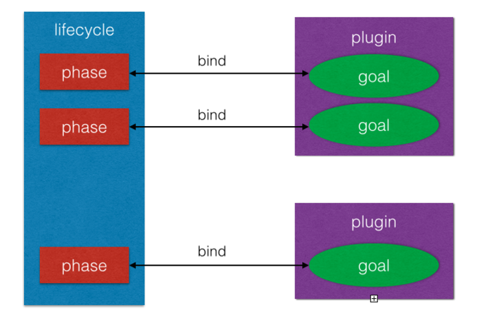

一、maven是什么？
Apache Maven，是一个软件（特别是Java软件）项目管理及自动构建工具，由Apache软件基金会所提供。基于项目对象模型（缩写：POM）概念，Maven利用一个中央信息片断能管理一个项目的构建、报告和文档等步骤。
Maven也可被用于构建和管理各种项目，例如C#，Ruby，Scala和其他语言编写的项目。Maven曾是Jakarta项目的子项目，现为由Apache软件基金会主持的独立Apache项目。
二、maven有何用？
日常工作中maven使用最多的就是Java工程师使用maven进行工程项目的依赖管理，其实maven主要作用就两个：
- 统一开发规范与工具
- 统一管理jar包
三、maven原理是什么？
1、两个基本概念
（1）、POM
POM的全称是Project Object Model，用通俗点的话说就是对要构建的项目进行建模，将要构建的项目看成是一个对象（Object）。在maven中一个项目都是用一个唯一的坐标（coordinate）来表示，坐标由groupId, artifactId, version, classifier, type这五部分组成。这样来说PO应该也要具备坐标属性。另外，一个项目会依赖另一个项目，所以PO应该具备dependencies属性，同样的，PO对象也有其父对象，用parent属性来表示，并且PO对象会继承其父对象的所有属性。另外一方面，一个项目可能根据不同职责分为多个模块（module），所有模块其实也就是一个单独的项目，只不过这些项目会使用其父对象的一些属性来进行构建。综上，这个用Java描述的的PO对象为：
1 | class PO{ |
其PO对象所在pom.xml中对应的是
（2）、LifeCycle
Lifecycle顾名思义就是生命周期的意思，一个LifeCycle包括多个phase，正常一个标准的LifeCycle以下的phase:
1 | validate： 用于验证项目的有效性和其项目所需要的内容是否具备 |
而phase就相当于对应java的一个接口定义，而此时引入另一个概念—goal，goal就是一个phase的具体实现，一个goal在maven中就是一个Mojo（Maven old java object）。Mojo抽象类中定义了一个execute()方法，一个goal的具体动作就是在execute()方法中实现。而goal对应的就是maven pom.xml中的

综上，总结以上几个概念：
- POM(Project Object Model)：工程对象模型，对应pom.xml中的
。 - LifeCycle:maven的的生命周期对应多个phase，phase有对应一个具体的动作实现goal，吗，每个phase都会对应一个具体的goal，goal对应pom.xml中的
。
四、maven什么实现？
maven是使用Java实现，Githu上的地址：https://github.com/apache/maven。（待续）
五、maven什么应用？
maven主要用于管理工程依赖与编译工程，可以作为持续集成工具的一部分，下面主要介绍一些常用命令：
1、mvn常用参数
mvn -e 显示详细错误
mvn -U 强制更新snapshot类型的插件或依赖库（否则maven一天只会更新一次snapshot依赖）
mvn -o 运行offline模式，不联网更新依赖
mvn -N 仅在当前项目模块执行命令，关闭reactor
mvn -pl module_name在指定模块上执行命令
mvn -ff 在递归执行命令过程中，一旦发生错误就直接退出
mvn -Dxxx=yyy 指定java全局属性
mvn -Pxxx 引用profile xxx
2、Build Lifecycle中介绍的命令
mvn test-compile 编译测试代码
mvn test 运行程序中的单元测试
mvn compile 编译项目
mvn package 打包，此时target目录下会出现maven-quickstart-1.0-SNAPSHOT.jar文件，即为打包后文件
mvn install 打包并安装到本地仓库，此时本机仓库会新增maven-quickstart-1.0-SNAPSHOT.jar文件。
3、maven日用三板斧
mvn archetype:generate 创建maven项目
mvn package 打包，上面已经介绍过了
mvn package -Prelease打包，并生成部署用的包，比如deploy/*.tgz
mvn install 打包并安装到本地库
mvn eclipse:eclipse 生成eclipse项目文件
mvn eclipse:clean 清除eclipse项目文件
mvn site 生成项目相关信息的网站
mvn archetype:generate 创建maven项目
mvn validate 验证项目是否正确
mvn jar:jar 只打jar包
mvn source:jar 生成源码jar包
mvn generate-sources 产生应用需要的任何额外的源代码
mvn compile 编译源代码
mvn verify 运行检查
mvn idea:idea 生成idea项目
mvn:deploy 发布项目到远程仓库
mvn integration-test 在集成测试可以运行的环境中处理和发布包
mvn dependency:tree 显示maven依赖树
mvn dependency:list 显示maven依赖列表
mvn dependency:sources 下载依赖包的源码
mvn install:install-file -DgroupId=packageName -DartifactId=projectName -Dversion=version -Dpackaging=jar -Dfile=path 安装本地jar到本地仓库
4、web项目相关命令
mvn tomcat:run 启动tomcat
mvn jetty:run 启动jetty
mvn tomcat:deploy 运行打包部署
mvn tomcat:undeploy 撤销部署
mvn tomcat:start 启动web应用
mvn tomcat:stop 停止web应用
mvn tomcat:redeploy 重新部署
mvn war:exploded tomcat:exploded 部署展开的war文件
参考文献与书籍
https://zh.wikipedia.org/wiki/Apache_Maven
https://www.jianshu.com/p/0fb5e3fb704d
https://zhuanlan.zhihu.com/p/29208926